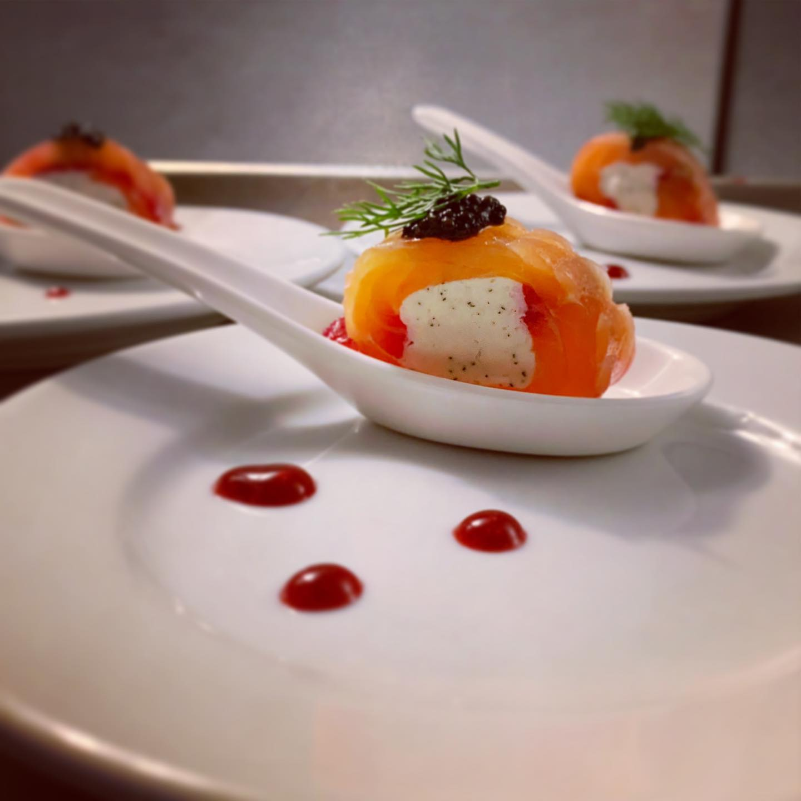
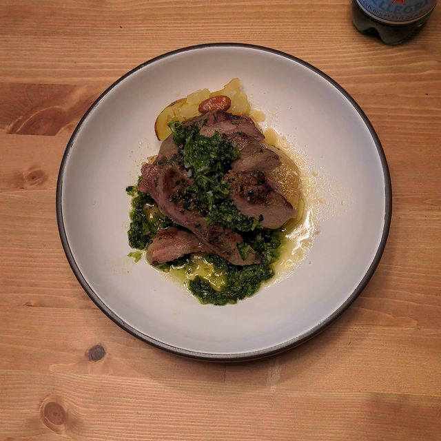
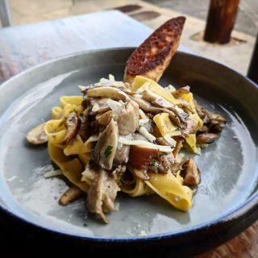

Creativity
Creativity is one of the main forces of being a chef. In fact it is what seperates chefs from cooks. Being able to express ones self thorough food is one of the reasons chefs often pursue the career and the "lifestyle". Here are some examples of creative dishes.


